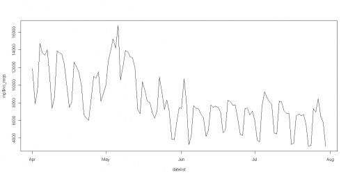
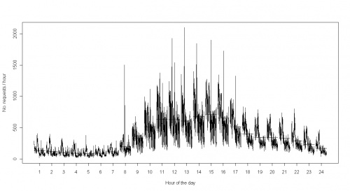
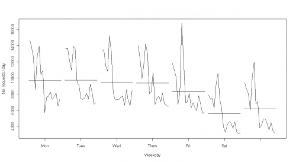
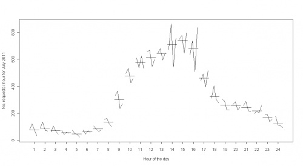
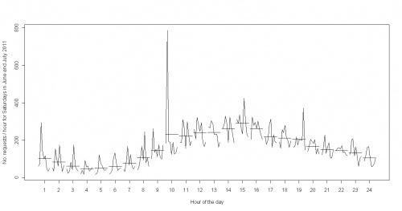

Using OpenURL Activity Data
The Using OpenURL Activity Data project
led to a number of different ways of visualisation of the
data. The project produced a number of summary graphs. such as:

OpenURL Router Data: Total Requests by Date
From this it can be seen that there is a peak in usage at exam time and that usage drops off over
the summer. The recipe for how to produce this is available, and the code and data for them all
can be found at http://figshare.com/figures/index.php/OpenURL_Router_Data:_No_of_requests_by_date

OpenURL Router Data: Total Requests by Hour
Note the sharp peak at the start of hours during the day - perhaps users are looking up things that
they have just heard about in lectures? It would certainly be interesting to look further.

OpenURL Router Data: Total Requests by Weekday
There is a common pattern each day, with the greatest number of searches in the late morning,
but why especially on Fridays?

OpenURL Router Data: Total Requests by Hour for Mondays in July 2011

OpenURL Router Data: Total requests per hour for Saturdays in June and July 2011
What did happen on the 9th?